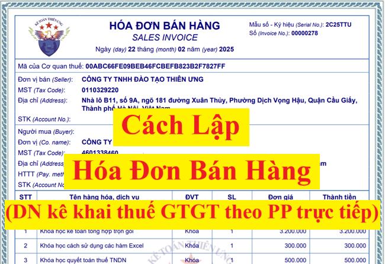
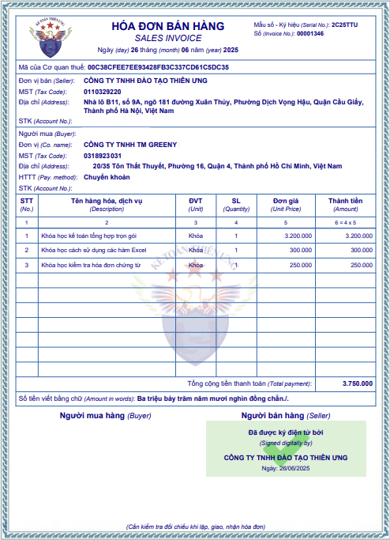

Hóa đơn bán hàng là hóa đơn dành cho các tổ chức, cá nhân kê khai, tính thuế giá trị gia tăng theo phương pháp trực tiếp sử dụng cho các hoạt động như: Bán hàng hóa, cung cấp dịch vụ trong nội địa; hoạt động vận tải quốc tế; xuất vào khu phi thuế quan và các trường hợp được coi như xuất khẩu, xuất khẩu hàng hóa, cung cấp dịch vụ ra nước ngoài. Hoặc các tổ chức, cá nhân trong khu phi thuế quan khi bán hàng hóa, cung cấp dịch vụ vào nội địa và khi bán hàng hóa, cung ứng dịch vụ giữa các tổ chức, cá nhân trong khu phi thuế quan với nhau, xuất khẩu hàng hóa, cung cấp dịch vụ ra nước ngoài, trên hóa đơn ghi rõ “Dành cho tổ chức, cá nhân trong khu phi thuế quan” thì cũng sẽ sử dụng hóa đơn bán hàng.
Khi nào phải xuất hóa đơn bán hàng?

Theo quy định tại điểm a Khoản 3 Điều 1 Nghị định 70/2025/NĐ-CP có hiệu lực từ ngày 01/06/2025 Sửa đổi, bổ sung khoản 1, điều 4 của Nghị định 123/2020/NĐ-CP quy định về hoá đơn, chứng từ thì:
1. Khi bán hàng hóa, cung cấp dịch vụ, người bán phải lập hóa đơn để giao cho người mua (bao gồm cả các trường hợp hàng hóa, dịch vụ dùng để khuyến mại, quảng cáo, hàng mẫu; hàng hóa, dịch vụ dùng để cho, biếu, tặng, trao đổi, trả thay lương cho người lao động và tiêu dùng nội bộ (trừ hàng hóa luân chuyển nội bộ để tiếp tục quá trình sản xuất); xuất hàng hóa dưới các hình thức cho vay, cho mượn hoặc hoàn trả hàng hóa) và các trường hợp lập hóa đơn theo quy định tại Điều 19 Nghị định này. Hóa đơn phải ghi đầy đủ nội dung theo quy định tại Điều 10 Nghị định này. Trường hợp sử dụng hóa đơn điện tử phải theo định dạng chuẩn dữ liệu của cơ quan thuế theo quy định tại Điều 12 Nghị định này.
Mẫu hóa đơn bán hàng điện tử:
Giải thích:
+ Mẫu số ký hiệu: 2C25TTU là hóa đơn bán hàng có mã của cơ quan thuế được lập năm 2025 và là hóa đơn điện tử do doanh nghiệp, tổ chức, hộ cá nhân kinh doanh ký sử dụng với cơ quan thuế;
+ Mã của cơ quan thuế đối với hóa đơn điện tử có mã của cơ quan thuế theo quy định tại khoản 2 Điều 3 Nghị định 123/2020/NĐ-CP như sau:
1. Chỉ tiêu "Ngày tháng năm": ghi theo quy định về thời điểm lập hóa đơn điện tử theo hướng dẫn tại Điều 9 Nghị định 123/2020/NĐ-CP hiện nay đã được bổ sung bởi Khoản 6 Điều 1 Nghị định 70/2025/NĐ-CP có hiệu lực từ ngày 01/06/2025 và được hiển thị theo định dạng ngày, tháng, năm của năm dương lịch.

Giải thích:
+ Mẫu số ký hiệu: 2C25TTU là hóa đơn bán hàng có mã của cơ quan thuế được lập năm 2025 và là hóa đơn điện tử do doanh nghiệp, tổ chức, hộ cá nhân kinh doanh ký sử dụng với cơ quan thuế;
+/ Số 2: Phản ánh loại hóa đơn điện tử bán hàng
+/ Chữ C thể hiện hóa đơn điện tử có mã của cơ quan thuế
+/ Hai ký tự tiếp theo là năm lập hóa đơn điện tử được xác định theo 2 chữ số cuối của năm dương lịch.
Ví dụ: năm lập hóa đơn điện tử là năm 2025 thì thể hiện là số 25;
+/ Chữ T: Áp dụng đối với hóa đơn điện tử do các doanh nghiệp, tổ chức, hộ, cá nhân kinh doanh đăng ký sử dụng với cơ quan thuế;
+/ Hai ký tự cuối là chữ viết do người bán tự xác định căn cứ theo nhu cầu quản lý. Trường hợp người bán sử dụng nhiều mẫu hóa đơn điện tử trong cùng một loại hóa đơn thì sử dụng hai ký tự cuối nêu trên để phân biệt các mẫu hóa đơn khác nhau trong cùng một loại hóa đơn. Trường hợp không có nhu cầu quản lý thì để là YY;
+ Số hóa đơn: 00001346 tối đa 8 chữ số
Chi tiết các bạn xem thêm đây: Quy định về số hóa đơn điện tử
+ Mã của cơ quan thuế đối với hóa đơn điện tử có mã của cơ quan thuế theo quy định tại khoản 2 Điều 3 Nghị định 123/2020/NĐ-CP như sau:
Hóa đơn điện tử có mã của cơ quan thuế là hóa đơn điện tử được cơ quan thuế cấp mã trước khi tổ chức, cá nhân bán hàng hóa, cung cấp dịch vụ gửi cho người mua.
Mã của cơ quan thuế trên hóa đơn điện tử bao gồm số giao dịch là một dãy số duy nhất do hệ thống của cơ quan thuế tạo ra và một chuỗi ký tự được cơ quan thuế mã hóa dựa trên thông tin của người bán lập trên hóa đơn.
Cách lập hóa đơn bán hàng điện tử theo Nghị định 70/2025/NĐ-CP sửa đổi bổ sung Nghị định 123/2020/NĐ-CP như sau:
1. Chỉ tiêu "Ngày tháng năm": ghi theo quy định về thời điểm lập hóa đơn điện tử theo hướng dẫn tại Điều 9 Nghị định 123/2020/NĐ-CP hiện nay đã được bổ sung bởi Khoản 6 Điều 1 Nghị định 70/2025/NĐ-CP có hiệu lực từ ngày 01/06/2025 và được hiển thị theo định dạng ngày, tháng, năm của năm dương lịch.
Cụ thể như sau:
1. Thời điểm lập hóa đơn đối với bán hàng hóa (bao gồm cả bán, chuyển nhượng tài sản công và bán hàng dự trữ quốc gia) là thời điểm chuyển giao quyền sở hữu hoặc quyền sử dụng hàng hóa cho người mua, không phân biệt đã thu được tiền hay chưa thu được tiền.
Đối với xuất khẩu hàng hóa (bao gồm cả gia công xuất khẩu), thời điểm lập hóa đơn thương mại điện tử, hóa đơn giá trị gia tăng điện tử hoặc hóa đơn bán hàng điện tử do người bán tự xác định nhưng chậm nhất không quá ngày làm việc tiếp theo kể từ ngày hàng hóa được thông quan theo quy định pháp luật về hải quan.
2. Thời điểm lập hóa đơn đối với cung cấp dịch vụ là thời điểm hoàn thành việc cung cấp dịch vụ (bao gồm cả cung cấp dịch vụ cho tổ chức, cá nhân nước ngoài) không phân biệt đã thu được tiền hay chưa thu được tiền. Trường hợp người cung cấp dịch vụ có thu tiền trước hoặc trong khi cung cấp dịch vụ thì thời điểm lập hóa đơn là thời điểm thu tiền (không bao gồm trường hợp thu tiền đặt cọc hoặc tạm ứng để đảm bảo thực hiện hợp đồng cung cấp các dịch vụ: Kế toán, kiểm toán, tư vấn tài chính, thuế; thẩm định giá; khảo sát, thiết kế kỹ thuật; tư vấn giám sát; lập dự án đầu tư xây dựng).
3. Trường hợp giao hàng nhiều lần hoặc bàn giao từng hạng mục, công đoạn dịch vụ thì mỗi lần giao hàng hoặc bàn giao đều phải lập hóa đơn cho khối lượng, giá trị hàng hóa, dịch vụ được giao tương ứng.
Thời điểm lập hóa đơn đối với một số trường hợp cụ thể các bạn xem chi tiết tại đây: Thời điểm xuất hóa đơn theo Nghị định 70/2025
2. Tên, địa chỉ, mã số thuế của người bán
Trên hóa đơn phải thể hiện tên, địa chỉ, mã số thuế của người bán theo đúng tên, địa chỉ, mã số thuế ghi tại giấy chứng nhận đăng ký doanh nghiệp, giấy chứng nhận đăng ký hoạt động chi nhánh, giấy chứng nhận đăng ký hộ kinh doanh, giấy chứng nhận đăng ký thuế, thông báo mã số thuế, giấy chứng nhận đăng ký đầu tư, giấy chứng nhận đăng ký hợp tác xã.
3. Tên, địa chỉ, mã số thuế hoặc mã số đơn vị có quan hệ với ngân sách hoặc số định danh cá nhân của người mua
a) Trường hợp người mua là cơ sở kinh doanh có mã số thuế thì tên, địa chỉ, mã số thuế của người mua thể hiện trên hóa đơn phải ghi theo đúng tại giấy chứng nhận đăng ký doanh nghiệp, giấy chứng nhận đăng ký hoạt động chi nhánh, giấy chứng nhận đăng ký hộ kinh doanh, giấy chứng nhận đăng ký thuế, thông báo mã số thuế, giấy chứng nhận đăng ký đầu tư, giấy chứng nhận đăng ký hợp tác xã; trường hợp người mua là đơn vị có quan hệ ngân sách thì tên, địa chỉ, mã số đơn vị có quan hệ ngân sách thể hiện trên hóa đơn phải ghi mã số đơn vị có quan hệ với ngân sách được cấp.
Trường hợp tên, địa chỉ người mua quá dài, trên hóa đơn người bán được viết ngắn gọn một số danh từ thông dụng như: “Phường” thành “P”; “Quận” thành “Q”, “Thành phố” thành “TP”, “Việt Nam” thành “VN” hoặc “Cổ phần” là “CP”, “Trách nhiệm hữu hạn” thành “TNHH”, “khu công nghiệp” thành “KCN”, “sản xuất” thành “SX”, “Chi nhánh” thành “CN”... nhưng phải đảm bảo đầy đủ số nhà, tên đường phố, phường, xã, quận, huyện, thành phố, xác định được chính xác tên, địa chỉ doanh nghiệp và phù hợp với đăng ký kinh doanh, đăng ký thuế của doanh nghiệp.
b) Trường hợp người mua không có mã số thuế thì trên hóa đơn không phải thể hiện mã số thuế người mua. Một số trường hợp bán hàng hóa, cung cấp dịch vụ đặc thù cho người tiêu dùng là cá nhân quy định tại khoản 14 Điều này thì trên hóa đơn không phải thể hiện tên, địa chỉ người mua. Trường hợp bán hàng hóa, cung cấp dịch vụ cho khách hàng nước ngoài đến Việt Nam thì thông tin về địa chỉ người mua có thể được thay bằng thông tin về số hộ chiếu hoặc giấy tờ xuất nhập cảnh và quốc tịch của khách hàng nước ngoài. Trường hợp người mua cung cấp mã số thuế, số định danh cá nhân thì trên hóa đơn phải thể hiện mã số thuế, số định danh cá nhân.
6. Tên, đơn vị tính, số lượng, đơn giá hàng hóa, dịch vụ; Tổng cộng tiền thanh toán.
a) Tên, đơn vị tính, số lượng, đơn giá hàng hóa, dịch vụ
a.1) Tên hàng hóa, dịch vụ: Trên hóa đơn phải thể hiện tên hàng hóa, dịch vụ bằng tiếng Việt. Trường hợp bán hàng hóa có nhiều chủng loại khác nhau thì tên hàng hóa thể hiện chi tiết đến từng chủng loại (ví dụ: Điện thoại Samsung, điện thoại Nokia; mặt hàng ăn, uống;...). Trường hợp hàng hóa phải đăng ký quyền sử dụng, quyền sở hữu thì trên hóa đơn phải thể hiện các số hiệu, ký hiệu đặc trưng của hàng hóa mà khi đăng ký pháp luật có yêu cầu. Ví dụ: Số khung, số máy của ô tô, mô tô, địa chỉ, cấp nhà, chiều dài, chiều rộng, số tầng của một ngôi nhà... Trường hợp kinh doanh dịch vụ vận tải thì trên hoá đơn phải thể hiện biển kiểm soát phương tiện vận tải, hành trình (điểm đi - điểm đến). Đối với doanh nghiệp kinh doanh vận tải cung cấp dịch vụ vận tải hàng hóa trên nền tảng số, hoạt động thương mại điện tử thì phải thể hiện tên hàng hóa vận chuyển, thông tin tên, địa chỉ, mã số thuế hoặc số định danh người gửi hàng.
Trường hợp cần ghi thêm chữ nước ngoài thì chữ nước ngoài được đặt bên phải trong ngoặc đơn ( ) hoặc đặt ngay dưới dòng tiếng Việt và có cỡ chữ nhỏ hơn chữ tiếng Việt. Trường hợp hàng hóa, dịch vụ được giao dịch có quy định về mã hàng hóa, dịch vụ thì trên hóa đơn phải ghi cả tên và mã hàng hóa, dịch vụ.
a.2) Đơn vị tính: Người bán căn cứ vào tính chất, đặc điểm của hàng hóa để xác định tên đơn vị tính của hàng hóa thể hiện trên hóa đơn theo đơn vị tính là đơn vị đo lường (ví dụ như: Tấn, tạ, yến, kg, g, mg hoặc lượng, lạng, cái, con, chiếc, hộp, can, thùng, bao, gói, tuýp, m3, m2, m...). Đối với dịch vụ thì trên hóa đơn không nhất thiết phải có tiêu thức “đơn vị tính” mà đơn vị tính xác định theo từng lần cung cấp dịch vụ và nội dung dịch vụ cung cấp.
a.3) Số lượng hàng hóa, dịch vụ: Người bán ghi số lượng bằng chữ số Ả-rập căn cứ theo đơn vị tính nêu trên. Trường hợp cung cấp các loại hàng hóa, dịch vụ đặc thù như điện, nước, dịch vụ viễn thông, dịch vụ công nghệ thông tin, dịch vụ truyền hình, dịch vụ bưu chính và chuyển phát, ngân hàng, chứng khoán, bảo hiểm, được lập theo kỳ quy ước, dịch vụ khám bệnh, chữa bệnh và các trường hợp khác theo hướng dẫn của Bộ trưởng Bộ Tài chính được lập hóa đơn sau khi đối soát dữ liệu thì người bán được sử dụng bảng kê kèm theo hóa đơn; bảng kê được lưu giữ cùng hóa đơn để phục vụ việc kiểm tra, đối chiếu của các cơ quan có thẩm quyền.
Trường hợp khuyến mại hàng hóa, dịch vụ theo quy định của pháp luật về thương mại; cho, biếu, tặng hàng hóa, dịch vụ phù hợp với quy định pháp luật thì được lập hóa đơn tổng giá trị khuyến mại, cho, biếu, tặng kèm theo danh sách khuyến mại, cho, biếu, tặng. Tổ chức lưu giữ hồ sơ có liên quan về chương trình khuyến mại, cho, biếu, tặng và cung cấp khi cơ quan có thẩm quyền yêu cầu và phải chịu trách nhiệm về tính chính xác nội dung thông tin giao dịch và cung cấp bảng tổng hợp chi tiết hàng hóa, dịch vụ khi cơ quan có thẩm quyền yêu cầu. Trường hợp khách hàng yêu cầu lấy hóa đơn theo từng giao dịch thì người bán phải lập hóa đơn giao cho khách hàng.
Hóa đơn phải ghi rõ “kèm theo bảng kê số…, ngày... tháng... năm”. Bảng kê phải có tên, mã số thuế và địa chỉ của người bán, tên hàng hóa, dịch vụ, số lượng, đơn giá, thành tiền hàng hóa, dịch vụ bán ra, ngày lập, tên và chữ ký người lập bảng kê. Trường hợp người bán nộp thuế giá trị gia tăng theo phương pháp khấu trừ thì Bảng kê phải có tiêu thức “thuế suất thuế giá trị gia tăng” và “tiền thuế giá trị gia tăng”. Tổng cộng tiền thanh toán đúng với số tiền ghi trên hóa đơn giá trị gia tăng. Hàng hóa, dịch vụ bán ra ghi trên Bảng kê theo thứ tự bán hàng trong ngày. Bảng kê phải ghi rõ “kèm theo hóa đơn số...ngày... tháng... năm”.
a.4) Đơn giá hàng hóa, dịch vụ: Người bán ghi đơn giá hàng hóa, dịch vụ theo đơn vị tính nêu trên. Trường hợp các hàng hóa, dịch vụ sử dụng bảng kê để liệt kê các hàng hóa, dịch vụ đã bán kèm theo hóa đơn thì trên hóa đơn không nhất thiết phải có đơn giá.
b) Thuế suất thuế giá trị gia tăng: Thuế suất thuế giá trị gia tăng thể hiện trên hóa đơn là thuế suất thuế giá trị gia tăng tương ứng với từng loại hàng hóa, dịch vụ theo quy định của pháp luật về thuế giá trị gia tăng.
c) Thành tiền chưa có thuế giá trị gia tăng, tổng số tiền thuế giá trị gia tăng theo từng loại thuế suất, tổng cộng tiền thuế giá trị gia tăng, tổng tiền thanh toán đã có thuế giá trị gia tăng được thể hiện bằng đồng Việt Nam theo chữ số Ả-rập, trừ trường hợp bán hàng thu ngoại tệ không phải chuyển đổi ra đồng Việt Nam thì thể hiện theo nguyên tệ.
d) Tổng số tiền thanh toán trên hóa đơn được thể hiện bằng đồng Việt Nam theo chữ số Ả rập và bằng chữ tiếng Việt, trừ trường hợp bán hàng thu ngoại tệ không phải chuyển đổi ra đồng Việt Nam thì tổng số tiền thanh toán thể hiện bằng nguyên tệ và bằng chữ tiếng nước ngoài.
đ) Trường hợp cơ sở kinh doanh áp dụng hình thức chiết khấu thương mại dành cho khách hàng hoặc khuyến mại theo quy định của pháp luật thì phải thể hiện rõ khoản chiết khấu thương mại, khuyến mại trên hóa đơn. Việc xác định giá tính thuế giá trị gia tăng (thành tiền chưa có thuế giá trị gia tăng) trong trường hợp áp dụng chiết khấu thương mại dành cho khách hàng hoặc khuyến mại thực hiện theo quy định của pháp luật thuế giá trị gia tăng.
e) Trường hợp doanh nghiệp vận tải hàng không sử dụng hệ thống xuất vé được lập theo thông lệ quốc tế thì các khoản phí dịch vụ thu trên chứng từ vận tải hàng không (phí quản trị hệ thống, phí đổi chứng từ vận tải và các khoản phí khác) và các khoản thu hộ phí dịch vụ sân bay của các doanh nghiệp vận tải hàng không (như phí phục vụ hành khách, phí soi chiếu an ninh và các loại phí khác) ghi trên hóa đơn là giá thanh toán đã có thuế giá trị gia tăng. Doanh nghiệp hàng không được làm tròn số đến hàng nghìn đối với các khoản thu trên chứng từ vận tải theo quy định của Hiệp hội hàng không quốc tế (IATA).
7. Chữ ký của người bán, chữ ký của người mua, cụ thể:
Trường hợp người bán là doanh nghiệp, tổ chức thì chữ ký số của người bán trên hóa đơn là chữ ký số của doanh nghiệp, tổ chức; trường hợp người bán là cá nhân thì sử dụng chữ ký số của cá nhân hoặc người được ủy quyền.
Đối với hóa đơn điện tử của cơ quan thuế cấp theo từng lần phát sinh không nhất thiết phải có chữ ký số của người bán, người mua.
Lưu ý: Trên hóa đơn điện tử không nhất thiết phải có chữ ký điện tử của người mua (bao gồm cả trường hợp lập hóa đơn điện tử khi bán hàng hóa, cung cấp dịch vụ cho khách hàng ở nước ngoài). Trường hợp người mua là cơ sở kinh doanh và người mua, người bán có thỏa thuận về việc người mua đáp ứng các điều kiện kỹ thuật để ký số, ký điện tử trên hóa đơn điện tử do người bán lập thì hóa đơn điện tử có chữ ký số, ký điện tử của người bán và người mua theo thỏa thuận giữa hai bên.
Đối với hóa đơn điện tử của cơ quan thuế cấp theo từng lần phát sinh không nhất thiết phải có chữ ký số của người bán, người mua.
Đối với hóa đơn điện tử bán hàng tại siêu thị, trung tâm thương mại mà người mua là cá nhân không kinh doanh thì trên hóa đơn không nhất thiết phải có tên, địa chỉ, mã số thuế người mua.
Đối với hóa đơn điện tử bán xăng dầu cho khách hàng là cá nhân không kinh doanh thì không nhất thiết phải có các chỉ tiêu tên hóa đơn, ký hiệu mẫu số hóa đơn, ký hiệu hóa đơn, số hóa đơn; tên, địa chỉ, mã số thuế của người mua, chữ ký điện tử của người mua; chữ ký số, chữ ký điện tử của người bán, thuế suất thuế giá trị gia tăng.
Đối với hóa đơn điện tử là tem, vé, thẻ thì trên hóa đơn không nhất thiết phải có chữ ký số của người bán (trừ trường hợp tem, vé, thẻ là hóa đơn điện tử do cơ quan thuế cấp mã), tiêu thức người mua (tên, địa chỉ, mã số thuế), tiền thuế, thuế suất thuế giá trị gia tăng. Trường hợp tem, vé, thẻ điện tử có sẵn mệnh giá thì không nhất thiết phải có tiêu thức đơn vị tính, số lượng, đơn giá.
Đối với chứng từ điện tử dịch vụ vận tải hàng không xuất qua website và hệ thống thương mại điện tử được lập theo thông lệ quốc tế cho người mua là cá nhân không kinh doanh được xác định là hóa đơn điện tử thì trên hóa đơn không nhất thiết phải có ký hiệu hóa đơn, ký hiệu mẫu hóa đơn, số thứ tự hóa đơn, thuế suất thuế giá trị gia tăng, mã số thuế, địa chỉ người mua, chữ ký số của người bán.
Trường hợp tổ chức kinh doanh hoặc tổ chức không kinh doanh mua dịch vụ vận tải hàng không thì chứng từ điện tử dịch vụ vận tải hàng không xuất qua website và hệ thống thương mại điện tử được lập theo thông lệ quốc tế cho các cá nhân của tổ chức kinh doanh, cá nhân của tổ chức không kinh doanh thì không được xác định là hóa đơn điện tử. Doanh nghiệp kinh doanh dịch vụ vận tải hàng không phải lập hóa đơn điện tử có đầy đủ các nội dung theo quy định giao cho tổ chức có cá nhân sử dụng dịch vụ vận tải hàng không.
8. Thời điểm ký số trên hóa đơn điện tử là thời điểm người bán, người mua sử dụng chữ ký số để ký trên hóa đơn điện tử được hiển thị theo định dạng ngày, tháng, năm của năm dương lịch. Trường hợp hóa đơn điện tử đã lập có thời điểm ký số trên hóa đơn khác thời điểm lập hóa đơn thì thời điểm ký số và thời điểm gửi cơ quan thuế cấp mã đối với hóa đơn có mã của cơ quan thuế hoặc thời điểm chuyển dữ liệu hóa đơn điện tử đến cơ quan thuế đối với hóa đơn điện tử không có mã của cơ quan thuế chậm nhất là ngày làm việc tiếp theo kể từ thời điểm lập hóa đơn (trừ trường hợp gửi dữ liệu theo bảng tổng hợp quy định tại điểm a.1 khoản 3 Điều 22 Nghị định này). Người bán khai thuế theo thời điểm lập hóa đơn; thời điểm khai thuế đối với người mua là thời điểm nhận hóa đơn đảm bảo đúng, đầy đủ về hình thức và nội dung theo quy định tại Điều 10 Nghị định này.
9. Chữ viết, chữ số và đồng tiền thể hiện trên hóa đơn
a) Chữ viết hiển thị trên hóa đơn là tiếng Việt. Trường hợp cần ghi thêm chữ nước ngoài thì chữ nước ngoài được đặt bên phải trong ngoặc đơn ( ) hoặc đặt ngay dưới dòng tiếng Việt và có cỡ chữ nhỏ hơn chữ tiếng Việt. Trường hợp chữ trên hóa đơn là chữ tiếng Việt không dấu thì các chữ viết không dấu trên hóa đơn phải đảm bảo không dẫn tới cách hiểu sai lệch nội dung của hóa đơn.
b) Chữ số hiển thị trên hóa đơn là chữ số Ả-rập: 0, 1, 2, 3, 4, 5, 6, 7, 8, 9. Người bán được lựa chọn: sau chữ số hàng nghìn, triệu, tỷ, nghìn tỷ, triệu tỷ, tỷ tỷ phải đặt dấu chấm (.), nếu có ghi chữ số sau chữ số hàng đơn vị phải đặt dấu phẩy (,) sau chữ số hàng đơn vị hoặc sử dụng dấu phân cách số tự nhiên là dấu phẩy (,) sau chữ số hàng nghìn, triệu, tỷ, nghìn tỷ, triệu tỷ, tỷ tỷ và sử dụng dấu chấm (.) sau chữ số hàng đơn vị trên chứng từ kế toán.
c) Đồng tiền ghi trên hóa đơn là Đồng Việt Nam, ký hiệu quốc gia là “đ”.
- Trường hợp nghiệp vụ kinh tế, tài chính phát sinh bằng ngoại tệ theo quy định của pháp luật về ngoại hối thì đơn giá, thành tiền, tổng số tiền thuế giá trị gia tăng theo từng loại thuế suất, tổng cộng tiền thuế giá trị gia tăng, tổng số tiền thanh toán được ghi bằng ngoại tệ, đơn vị tiền tệ ghi tên ngoại tệ. Người bán đồng thời thể hiện trên hóa đơn tỷ giá ngoại tệ với đồng Việt Nam theo tỷ giá theo quy định của Luật Quản lý thuế và các văn bản hướng dẫn thi hành.
- Mã ký hiệu ngoại tệ theo tiêu chuẩn quốc tế (ví dụ: 13.800,25 USD - Mười ba nghìn tám trăm đô la Mỹ và hai mươi nhăm xu, ví dụ: 5.000,50 EUR- Năm nghìn ơ-rô và năm mươi xu).
- Trường hợp bán hàng hóa phát sinh bằng ngoại tệ theo quy định của pháp luật về ngoại hối và được nộp thuế bằng ngoại tệ thì tổng số tiền thanh toán thể hiện trên hóa đơn theo ngoại tệ, không phải quy đổi ra đồng Việt Nam.
Kế Toán Diệu Tâm mời cách bạn tham khảo thêm:
Kế Toán Diệu Tâm mời cách bạn tham khảo thêm: